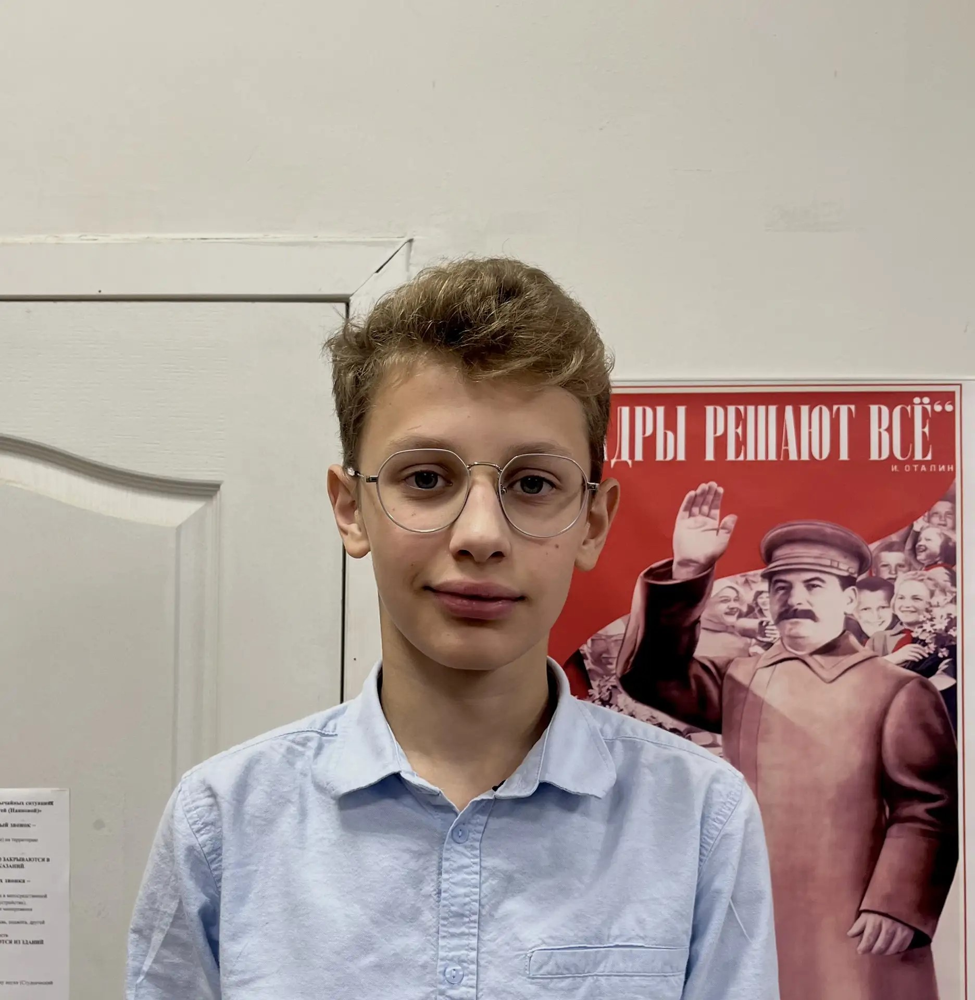
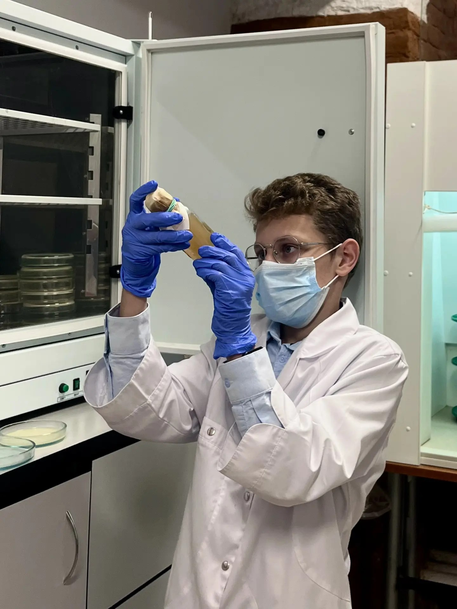

- Класс8 «В», химбио
- НаправлениеХимия и биология
- УвлеченияНастольный теннис, микробиология
- Девиз«Проверяю, прежде чем обещать»
Выборы совета обучающихся · 8 класс «В»
Химбио-класс · кандидат в совет обучающихся
«Наука, порядок и здоровье — каждый день. Не обещания, а система».

Кто я

Привет! Я Пётр Довбыш, ученик 8 «В» химбио-класса ГБНОУ СО «Академия для одаренных детей (Наяновой)». Учусь там, где ценят эксперимент, доказательства и аккуратность, — и именно такой подход хочу принести в совет обучающихся.
Я не люблю пустые обещания. Моя программа построена на измеримых действиях: проверки, голосования, турниры и постоянная научная жизнь вне уроков. Всё, что я предлагаю, можно увидеть, потрогать и проверить — и я готов отчитываться за результат каждый месяц.
Что я обещаю сделать
Четыре конкретных пункта, каждый — с понятным механизмом реализации.
Каждый месяц проводим школьное голосование о качестве и свежести блюд буфета. По итогам формирую открытый отчёт и передаю предложения администрации и работникам столовой.
Голосование учеников · отчёт раз в месяцСовместно с учителем биологии организую отбор проб с питьевых помп и кулеров. Проверяем состояние воды микробиологически и вывешиваем результаты на стенд — вода должна быть безопасной.
Пробы · лабораторный контроль · открытые данныеПровожу школьный турнир по настольному теннису с сеткой на классы и финалом. Это спорт, азарт и повод познакомиться ученикам разных параллелей — в перерывах и после уроков.
Сетка на классы · финал · призыРазвиваю научную деятельность вне уроков: мини-эксперименты, научные переменки, встречи с кружками и проектные мастерские. Чтобы наука была интересной и доступной каждому, а не только отличникам.
Научные переменки · проекты · мастерскиеДополнительно к программе
То, что реально сделать силами учеников — без больших затрат.
Уютный уголок с пуфами и столиком, где можно отдохнуть и пообщаться между уроками.
Таблички с QR-кодами и стенд «Расписание недели», чтобы новичкам было проще ориентироваться.
Раздельный сбор батареек и макулатуры с наглядными памятками и регулярным вывозом.
«Старшие — младшим»: помощь с домашним заданием и адаптацией для пятых классов.
«Сад на подоконнике»: растения, за которыми по графику ухаживают классы-шефы.
Стенд обратной связи, где любой может оставить предложение. Разбираем идеи раз в месяц.
Мой подход
Проверяю фактами: пробы, голосования, отчёты. Никаких обещаний «на словах».
Все результаты — на школьном стенде и в общем доступе. Вы видите, что сделано.
Готов брать ответственность и доводить дела до конца, а не только предлагать.
Спорт, наука и комфорт — то, что улучшает каждый школьный день уже сейчас.
Пётр Довбыш, 8 «В» химбио. Наука, спорт и забота о каждом — каждый день, а не только в день выборов.
«Проверяю, прежде чем обещать».